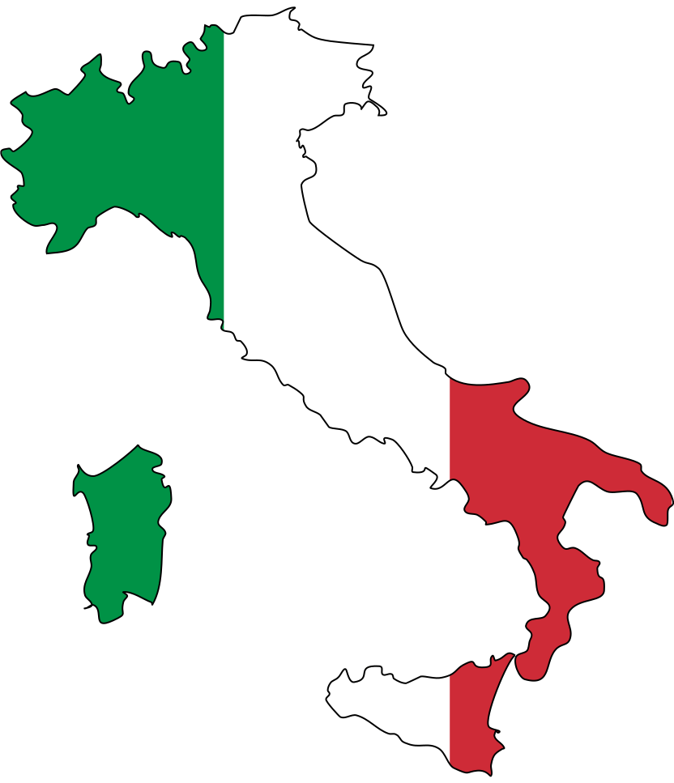
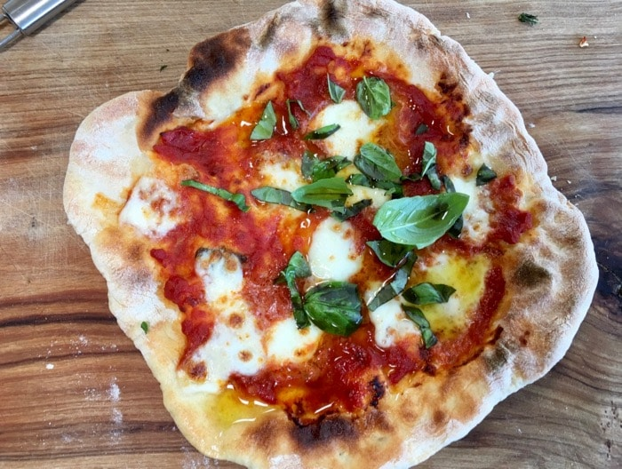

Home to one of the world's greatest art, architecture and food!
The country of Italy is a peninsula, located in Meditteranean Europe. It shares its northern boundary with France, Switzerland, Austria and Slovenia. Italian is the principal language of Italy, but there are minorities speaking German and French. The capital and largest city of Italy is Rome, known as Roma in Italian.
Rome is the third most visited city in Europe and the fourteenth worldwide. The city attracts visitors from all around the world who are eager to explore the beautiful monuments and archeological sites Rome has to offer.
My page on Rome has more information about the city and its attractions.
Venice is a city in Italy's northeast region, built on a group of islands connected by bridges. This city is a tourist destination most well - known for its canals and gondolas used as a method of transportation in the city.
Get to know more about Venice by visiting my other page.
Known as the birthplace of the Renaissance, Florences museums, palaces and churches are home to some of the greatest artistic treasures in the world.
Get to know about the attractions in Florence by visiting my other webpage.
Pisa is most famous for its Leaning Tower, an architectural project that went terribly wrong and is now a world - famous tourist site.
Know more about the Leaning Tower of Pisa , by visiting my other page.
The Amalfi Coast is one of Italys most memorable and breathtaking destinations, and about 5 million people visit this UNESCO world heritage site every year.
Get to know more about the beauty of the Amalfi Coast by visiting my other page on it.
PIZZA
There are many different types of pizzas in Italy, the most famous ones being a margherita, four cheese and neapolitan pizza.
PASTA

Just like pizzas, there are many different kinds of pasta too. The famous types include lasagnas, spaghetti and penne.
TIRAMISU

Tiramisu is a famous coffee - flavoured Italian desert, with its main ingredients being ladyfinger cookies, coffee, mascarpone cheese and cocoa powder.
Italy has a long history, as Rome was founded in 753 BC by two twins. After the Roman Empire broke down in 395 AD, there were many separate kingdoms and city states. Italy became one nation only in 1861 and since then, the country also includes the islands of Sicily and Sardegna. The Italian Republic was formed in 1946 and Italy is a member of the European Union (EU) and the NATO.
Go to this page on more information on monkeys .
Return to the top of the page.
© Aparna Kagini 2019